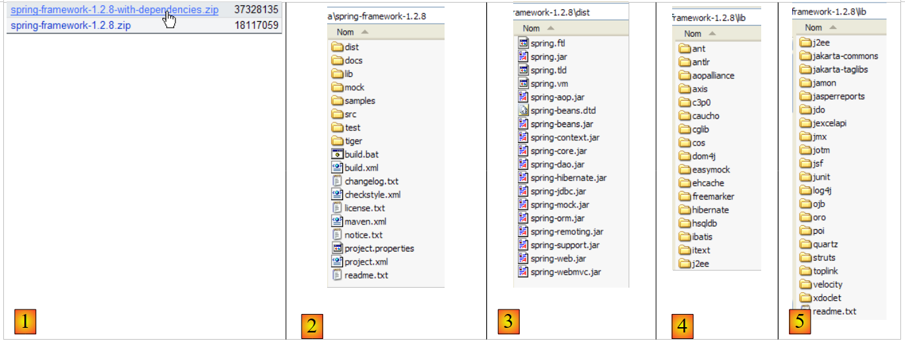
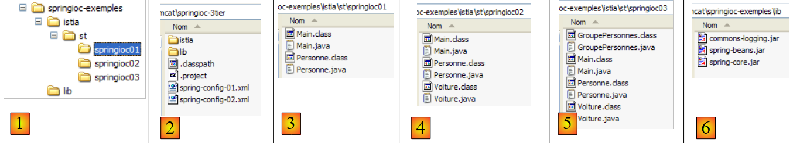

15. Spring IoC
15.1. Introduction
We aim to explore the configuration and integration capabilities of the Spring framework (http://www.springframework.org) as well as to define and use the concept of IoC (Inversion of Control), also known as Dependency Injection
Consider the 3-tier application we just built:
 |
To respond to user requests, the [Application] controller must communicate with the [service] layer. In our example, this was an instance of type [DaoImpl]. The [Application] controller obtained a reference to the [service] layer in its [init] method (Section 14.8.3):
- line 6: the [dao] layer was instantiated by explicitly creating a [DaoImpl] instance
- line 9: the [service] layer has been instantiated by explicitly creating an instance of [ServiceImpl]
Recall that the [DaoImpl] and [ServiceImpl] classes implement interfaces, specifically the [IDao] and [IService] interfaces, respectively. In future versions, the [IDao] interface will be implemented by a class managing a list of people stored in a database. Let’s call this class [DaoBD] for the sake of this example. Replacing the [DaoImpl] implementation of the [dao] layer with the [DaoBD] implementation will require recompiling the [web] layer. Indeed, line 6 above, which instantiates the [dao] layer with a [DaoImpl] type, must now instantiate it with a [DaoBD] type. Our [web] layer is therefore dependent on the [dao] layer. Line 9 above shows that it is also dependent on the [service] layer.
Spring IoC will allow us to create a 3-tier application where the layers are independent of one another, i.e., changing one does not require changing the others. This provides great flexibility in the evolution of the application.
The previous architecture will evolve as follows:
 |
With [Spring IoC], the [Application] controller will obtain the reference it needs from the [service] layer as follows:
- in its [init] method, it will ask the [Spring IoC] layer to provide a reference to the [service] layer
- [Spring IoC] will then use a configuration XML file that tells it which class should be instantiated and how it should be initialized.
- [Spring IoC] returns the reference to the created [service] layer to the [Application] controller.
The advantage of this solution is that the names of the classes instantiating the various layers are no longer hard-coded in the controller’s [init] method but are simply listed in a configuration file. Changing the implementation of a layer will require a change in this configuration file but not in the controller.
Let’s now explore the capabilities of [Spring IoC] using examples.
15.2. Spring IoC in Practice
15.2.1. Spring
[Spring IoC] is part of a larger project available at [http://www.springframework.org/] (May 2006):
 |  |
 |
- [1]: Spring uses various third-party technologies referred to here as dependencies. You must download the version with dependencies to avoid having to download the third-party tool libraries later.
- [2]: The directory structure of the downloaded zip file
- [3]: The [Spring] distribution, i.e., the .jar archives of the Spring project itself without its dependencies. The [IoC] aspect of Spring is provided by the [spring-core.jar, spring-beans.jar] archives.
- [4,5]: the third-party tool archives
15.2.2. Eclipse Projects for the Examples
We will build three examples illustrating the use of Spring IoC. They will all be in the following Eclipse project:

The [springioc-examples] project is configured so that the source files and compiled classes are located at the root of the project folder:
 |
- [1]: The [Eclipse] project folder structure
- [2]: Spring configuration files are located at the root of the project, and thus in the application’s classpath
- [3]: the classes from Example 1
- [4]: the classes from Example 2
- [5]: the classes from Example 3
- [6]: The project libraries [spring-core.jar, spring-beans.jar] can be found in the [dist] folder of the Spring distribution, and [commons-logging.jar] in the [lib/jakarta-commons] folder. These three archives have been included in the application's classpath.
15.2.3. Example 1
The elements of Example 1 have been placed in the [springioc01] package of the project:

The [Person] class is as follows:
The class contains:
- lines 6–7: two private fields, name and age
- lines 23–38: the get and set methods for these two fields
- lines 10-12: a toString method to retrieve the value of the [Person] object as a string
- lines 15-21: an init method that will be called by Spring when the object is created, and a close method that will be called when the object is destroyed
To instantiate objects of type [Person] using Spring, we will use the following [spring-config-01.xml] file:
<?xml version="1.0" encoding="UTF-8"?>
<!DOCTYPE beans PUBLIC "-//SPRING//DTD BEAN//EN" "http://www.springframework.org/dtd/spring-beans.dtd">
<beans>
<bean id="person1" class="istia.st.springioc01.Person" init-method="init" destroy-method="close">
<property name="name" value="Simon" />
<property name="age" value="40" />
</bean>
<bean id="person2" class="istia.st.springioc01.Person" init-method="init" destroy-method="close">
<property name="name" value="Brigitte" />
<property name="age" value="20" />
</bean>
</beans>
- Lines 3, 12: The <beans> tag is the root tag of Spring configuration files. Inside this tag, the <bean> tag is used to define the various objects to be created.
- lines 4–7: definition of a bean
- line 4: the bean is named [person1] (id attribute) and is an instance of the class [istia.st.springioc01.Person] (class attribute). The instance’s [init] method will be called once it is created (init-method attribute), and the instance’s [close] method will be called before it is destroyed (destroy-method attribute).
- line 5: defines the value to be assigned to the [name] property (name attribute) of the created [Person] instance. To perform this initialization, Spring will use the [setName] method. This method must therefore exist. This is the case here.
- Line 6: Same as above for the [age] property.
- Lines 8–11: Similar definition of a bean named [person2]
The [Main] test class is as follows:
Comments:
- line 10: to retrieve the beans defined in the [spring-config-01.xml] file, we use an [XmlBeanFactory] object, which allows us to instantiate the beans defined in an XML file. The [spring-config-01.xml] file will be placed in the application’s [ClassPath], i.e., in one of the directories searched by the Java Virtual Machine when it looks for a class referenced by the application. The [ClassPathResource] object is used to search for a resource in an application’s [ClassPath], in this case the [spring-config-01.xml] file. The resulting [bf] object (Bean Factory) allows us to obtain a reference to a bean named "XX" using the statement bf.getBean("XX").
- Line 12: A reference is requested for the bean named [person1] in the [spring-config-01.xml] file.
- Line 13: The value of the corresponding [Person] object is displayed.
- Lines 15–16: We do the same for the bean named [person2].
- Lines 18–19: We request the bean named [person2] again.
- Line 21: All beans in [bf] are removed, i.e., those created from the [spring-config-01.xml] file.
Executing the [Main] class yields the following results:
Comments:
- Line 1 was obtained by executing line 12 of [Main]. The operation
forced the creation of the bean [person1]. Because [init-method="init"] was written in the definition of the bean [person1], the [init] method of the created [Person] object was executed. The corresponding message is displayed.
- Line 2: Line 13 of [Main] displayed the value of the created [Person] object.
- Lines 3–4: The same process occurs for the bean named [person2].
- Line 5: The operation in lines 18–19 of [Main]
did not cause the creation of a new object of type [Person]. If that had been the case, the [init] method would have been displayed. This is the principle of the singleton. By default, Spring creates only a single instance of the beans in its configuration file. It is an object reference service. If asked for the reference to an object that has not yet been created, it creates it and returns a reference. If the object has already been created, Spring simply returns a reference to it. Here, since [person2] has already been created, Spring simply returns a reference to it.
- The output on lines 6–7 was triggered by line 21 of [Main], which requests the destruction of all beans referenced by the [XmlBeanFactory bf] object, namely the [person1] and [person2] beans. Because these two beans have the attribute [destroy-method="close"], the [close] method of both beans is executed, causing lines 6–7 to be displayed.
Now that we have covered the basics of a Spring configuration, we will be able to move through our explanations a bit more quickly.
15.2.4. Example 2
The elements of Example 2 are placed in the [springioc02] package of the project:

The [springioc02] package is first created by copying and pasting the [springioc01] package, then the [Car] class is added to it, and the [Main] class is adapted to the new example.
The [Car] class is as follows:
The class contains:
- lines 5–7: three private fields: type, make, and owner. These fields can be initialized and read using the public get and set methods in lines 26–48. They can also be initialized using the Car(String, String, Person) constructor defined in lines 13–17. The class also has a no-argument constructor to comply with the JavaBean standard.
- lines 20–23: a toString method to retrieve the value of the [Car] object as a string
- Lines 51–57: an `init` method that will be called by Spring immediately after the object is created, and a `close` method that will be called when the object is destroyed
To create objects of type [Car], we will use the following Spring file [spring-config-02.xml]:
<?xml version="1.0" encoding="UTF-8"?>
<!DOCTYPE beans PUBLIC "-//SPRING//DTD BEAN//EN" "http://www.springframework.org/dtd/spring-beans.dtd">
<beans>
<bean id="person1" class="istia.st.springioc02.Person" init-method="init" destroy-method="close">
<property name="name" value="Simon" />
<property name="age" value="40" />
</bean>
<bean id="person2" class="istia.st.springioc02.Person" init-method="init" destroy-method="close">
<property name="name" value="Brigitte" />
<property name="age" value="20" />
</bean>
<bean id="car1" class="istia.st.springioc02.Car" init-method="init" destroy-method="close">
<constructor-arg index="0" value="Peugeot" />
<constructor-arg index="1" value="307" />
<constructor-arg index="2">
<ref local="person2" />
</constructor-arg>
</bean>
</beans>
This file adds a bean with the key "car1" of type [Car] to the beans defined in [spring-config-01.xml] (lines 12–17). To initialize this bean, we could have written:
Rather than choosing the method already presented in Example 1, we have chosen to use the class's Car(String, String, Person) constructor here.
- line 12: definition of the bean’s name, its class, the method to execute after its instantiation, and the method to execute after its destruction.
- line 13: value of the first parameter of the constructor [Car(String, String, Person)].
- Line 14: Value of the second parameter of the constructor [Car(String, String, Person)].
- Lines 15–17: Value of the third parameter of the constructor [Car(String, String, Person)]. This parameter is of type [Person]. We provide it with the reference (ref tag) of the bean [person2] defined in the same file (local attribute).
For our tests, we will use the following [Main] class:
The [main] method retrieves the reference to the [car1] bean (line 12) and displays it (line 13). The results are as follows:
Comments:
- The [main] method requests a reference to the [car1] bean (line 12). Spring begins creating the [car1] bean because this bean has not yet been created (singleton). Because the [car1] bean references the [person2] bean, the latter bean is in turn constructed. The [person2] bean has been created. Its [init] method is then executed (line 1) of the results. The [car1] bean is then instantiated. Its [init] method is then executed (line 2) of the results.
- Line 3 of the results comes from line 13 of [main]: the value of the bean [car1] is displayed.
- Line 15 of [main] requests the destruction of all existing beans, which causes lines 4 and 5 of the results to be displayed.
15.2.5. Example 3
The elements of Example 3 are placed in the [springioc03] package of the project:

The [springioc03] package is first created by copying and pasting the [springioc01] package, then the [GroupePersonnes] class is added, the [Voiture] class is removed, and the [Main] class is adapted to the new example.
The [GroupePersonnes] class is as follows:
Its two private members are:
line 8: members: an array of people who are members of the group
line 9: workingGroups: a dictionary mapping a person to a working group
Note here that the [PersonGroup] class does not define a no-argument constructor. Recall that in the absence of any constructor, there is a "default" constructor, which is the no-argument constructor that does nothing.
The goal here is to demonstrate how Spring allows you to initialize complex objects, such as those with array or dictionary fields. The beans file [spring-config-03.xml] for Example 3 is as follows:
<?xml version="1.0" encoding="UTF-8"?>
<!DOCTYPE beans PUBLIC "-//SPRING//DTD BEAN//EN" "http://www.springframework.org/dtd/spring-beans.dtd">
<beans>
<bean id="person1" class="istia.st.springioc03.Person" init-method="init" destroy-method="close">
<property name="name" value="Simon" />
<property name="age" value="40" />
</bean>
<bean id="person2" class="istia.st.springioc03.Person" init-method="init" destroy-method="close">
<property name="name" value="Brigitte" />
<property name="age" value="20" />
</bean>
<bean id="group1" class="istia.st.springioc03.PersonGroup" init-method="init" destroy-method="close">
<property name="members">
<list>
<ref local="person1" />
<ref local="person2" />
</list>
</property>
<property name="workgroups">
<map>
<entry key="Brigitte" value="Marketing" />
<entry key="Simon" value="Human Resources" />
</map>
</property>
</bean>
</beans>
- lines 14–17: The <list> tag allows you to initialize an array-type field or one that implements the List interface with different values.
- lines 20-23: the <map> tag allows you to do the same thing with a field that implements the Map interface.
For our tests, we will use the following [Main] class:
- Lines 12-13: We ask Spring for a reference to the [group1] bean and display its value.
The results are as follows:
Comments:
- line 12 of [Main], a reference to the bean [group1] is requested. Spring begins creating this bean. Because the bean [group1] references the beans [person1] and [person2], these two beans are created (lines 1 and 2 of the results). The [group1] bean is then instantiated and its [init] method executed (line 3 of the results).
- Line 13 of [Main] displays line 4 of the results.
- Line 15 of [Main] displays lines 5–7 of the results.
15.3. Configuring an n-tier application with Spring
Consider a 3-tier application with the following structure:
UserDataBusinessLayer [business]DataAccessLayer [dao]UserInterfaceLayer [ui]
Here, we aim to demonstrate the benefits of using Spring to build such an architecture.
- The three layers will be made independent through the use of Java interfaces
- The integration of the three layers will be handled by Spring
The application structure in Eclipse could be as follows:
 |
- [1]: the [DAO] layer:
- [IDao]: the layer interface
- [Dao1, Dao2]: two implementations of this interface
- [2]: the [business] layer:
- [IMetier]: the layer's interface
- [Business1, Business2]: two implementations of this interface
- [3]: the [ui] layer:
- [IUi]: the interface of the layer
- [Ui1, Ui2]: two implementations of this interface
- [4]: the application's Spring configuration files. We will configure the application in two ways.
- [5]: the libraries required by the application. These are the ones used in the previous examples.
- [6]: the test package. [Main1] will use the [spring-config-01.xml] configuration and [Main2] the [spring-config-02.xml] configuration.
The purpose of this example is to show that we can change the implementation of one or more layers of the application with zero impact on the other layers. Everything happens in the Spring configuration file.
The [dao] layer
The [dao] layer implements the following [IDao] interface:
The implementation [Dao1] will be as follows:
The implementation [Dao2] will be as follows:
The [business] layer
The [business] layer implements the following [IMetier] interface:
The [Business1] implementation will be as follows:
The [Metier2] implementation will be as follows:
The [ui] layer
The [ui] layer implements the following [IUi] interface:
The implementation [Ui1] will be as follows:
The implementation [Ui2] will be as follows:
Spring configuration files
The first [spring-config-01.xml]:
<?xml version="1.0" encoding="UTF-8"?>
<!DOCTYPE beans PUBLIC "-//SPRING//DTD BEAN//EN" "http://www.springframework.org/dtd/spring-beans.dtd">
<beans>
<!-- the DAO class -->
<bean id="dao" class="istia.st.springioc.troistier.dao.Dao1"/>
<!-- the business class -->
<bean id="business" class="istia.st.springioc.troistier.metier.Metier1">
<property name="dao">
<ref local="dao" />
</property>
</bean>
<!-- the UI class -->
<bean id="ui" class="istia.st.springioc.troistier.ui.Ui1">
<property name="business">
<ref local="business" />
</property>
</bean>
</beans>
The second [spring-config-02.xml]:
<?xml version="1.0" encoding="UTF-8"?>
<!DOCTYPE beans PUBLIC "-//SPRING//DTD BEAN//EN" "http://www.springframework.org/dtd/spring-beans.dtd">
<beans>
<!-- the DAO class -->
<bean id="dao" class="istia.st.springioc.troistier.dao.Dao2"/>
<!-- the business class -->
<bean id="business"
class="istia.st.springioc.troistier.metier.Metier2">
<property name="dao">
<ref local="dao" />
</property>
</bean>
<!-- the UI class -->
<bean id="ui" class="istia.st.springioc.troistier.ui.Ui2">
<property name="business">
<ref local="metier" />
</property>
</bean>
</beans>
Test programs
The [Main1] program is as follows:
The [Main1] program uses the [spring-config-01.xml] configuration file and therefore the [Ui1, Metier1, Dao1] implementations of the layers. The results displayed in the Eclipse console:
The [Main2] program is as follows:
The [Main2] program uses the [spring-config-02.xml] configuration file and therefore the [Ui2, Metier2, Dao2] implementations of the layers. The results displayed in the Eclipse console:
15.4. Conclusion
The application we have built is highly scalable. We can change the implementation of a layer simply by configuring it. The code for the other layers remains unchanged. This is achieved through the IoC concept, which is one of the two pillars of Spring. The other pillar is AOP (Aspect-Oriented Programming), which we have not covered. It allows you to add "behavior" to a class method—also via configuration—without modifying the method’s code.